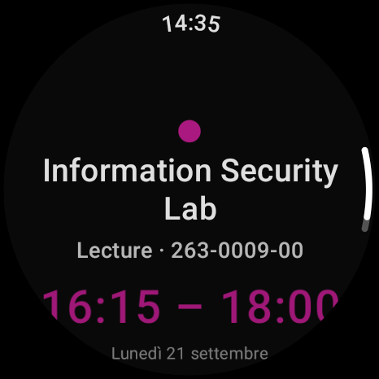
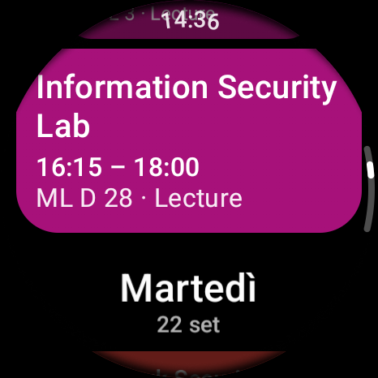
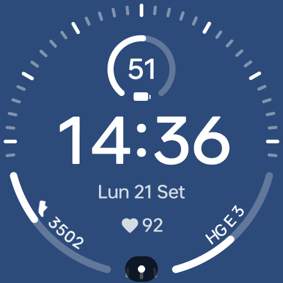

Your ETH class schedule, on your wrist.
PolyWear is a Wear OS app that shows your week grouped by day, with the next class in focus — plus a small phone companion that handles login.
Download APKs View source


Features
- Current week grouped by day, today highlighted
- Browse to next and previous weeks
- Opens focused on your next (or ongoing) class
- Per-course colours; tap a class for time, location and category
- Watch-face complication showing your next class
- Works offline: the last fetched week is cached on the watch
How it works
ETH's login can't be completed on a watch, so PolyWear comes as two apps:
- Phone companion — you sign in to eduapp in a normal web login screen. The app captures the resulting session and sends it to your watch over the Wear OS Data Layer.
- Watch app — stores that session encrypted, fetches your schedule directly from eduapp, and shows it.
Getting started
- Install the phone APK on your phone and the watch APK on your paired Wear OS watch.
- On the phone, open PolyWear Login and sign in to eduapp, then tap Send credential to watch.
- On the watch, open PolyWear. Your week appears, grouped by day.
Limitations
- Login capture is brittle: changes to eduapp's login can break it.
- For personal use only — PolyWear only accesses your own schedule with your own login.
Unofficial. PolyWear is an independent, personal project. It is not affiliated with, endorsed by, or supported by ETH Zürich. "ETH" and "eduapp" belong to ETH Zürich.